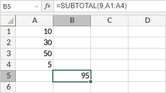
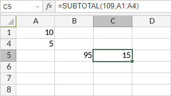

SUBTOTAL Funkcija
SUBTOTAL funkcija je jedna od funkcija za matematiku i trigonometriju. Funkcija se koristi za vraćanje delimičnog zbira (subtotal) u listi ili bazi podataka.
Sintaksa
SUBTOTAL(function_num, ref1, [ref2], ...)
SUBTOTAL funkcija ima sledeće argumente:
| Argument | Opis |
|---|---|
| function_num | Brojčana vrednost koja određuje koju funkciju koristiti za delimični zbir. Moguće vrednosti su navedene u tabeli ispod. Za argumente function_num od 1 do 11, SUBTOTAL funkcija uključuje vrednosti redova koji su ručno sakriveni. Za argumente function_num od 101 do 111, SUBTOTAL funkcija ignoriše vrednosti redova koji su ručno sakriveni. Vrednosti sakrivene filterom se uvek isključuju. |
| ref1/2/n | Do 255 referenci na opsege ćelija koje sadrže vrednosti za koje želite delimični zbir. |
Argument function_num može biti jedan od sledećih:
| broj funkcije (uključuje sakrivene vrednosti) | broj funkcije (isključuje sakrivene vrednosti) | Funkcija |
|---|---|---|
| 1 | 101 | AVERAGE |
| 2 | 102 | COUNT |
| 3 | 103 | COUNTA |
| 4 | 104 | MAX |
| 5 | 105 | MIN |
| 6 | 106 | PRODUCT |
| 7 | 107 | STDEV |
| 8 | 108 | STDEVP |
| 9 | 109 | SUM |
| 10 | 110 | VAR |
| 11 | 111 | VARP |
Napomene
Kako primeniti SUBTOTAL funkciju.
Primeri
Slika ispod prikazuje rezultat koji vraća SUBTOTAL funkcija.

Slika ispod prikazuje rezultat koji vraća SUBTOTAL funkcija kada je nekoliko redova sakriveno.
